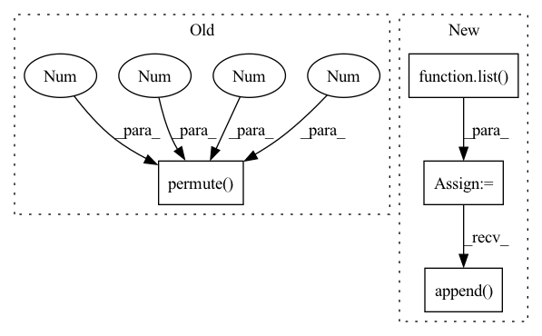

Pattern ID :2028

Before Change
for logits, codes in zip(allLogits, allTrues):
// rand = torch.randint_like(codes, logits.shape[-1])
// regLoss.append(self._auxLoss(logits.permute(0, 4, 1, 2, 3), rand))
mleLoss.append(self._auxLoss(logits.permute(0, 4, 1, 2, 3), codes))
// self._movingMean -= 0.9 * (self._movingMean - ssimLoss.mean())
// pLoss = self._pLoss(image, restored)
After Change
// regLoss = list()
weakCodebookLoss = list()
weakFeatureLoss = list()
for features, codebooks in zip(allFeatures, allCodebooks):
for codebook in codebooks:
// [k, k] := [k, c] @ [c, k]
innerProduct = codebook @ codebook.T
// orthogonal regularization
weakCodebookLoss.append(self._auxLoss(innerProduct, torch.eye(innerProduct.shape[0], device=innerProduct.device, dtype=innerProduct.dtype)))
m = len(features)
for i in range(m):
for j in range(i + 1, m):
// [n, h, w] := ([n, c, h, w] * [n, c, h, w]).sum(1)
interProduct = (features[i] * features[j]).sum(1)
// feature from different group should be orthogonal
weakFeatureLoss.append(2 * self._auxLoss(interProduct, torch.zeros_like(interProduct)))
intraProduct = (features[i] * features[i]).sum(1)
weakFeatureLoss.append(self._auxLoss(intraProduct, torch.ones_like(intraProduct)))
// self._movingMean -= 0.9 * (self._movingMean - ssimLoss.mean())
// pLoss = self._pLoss(image, restored)
return dLoss, (sum(weakCodebookLoss), sum(weakFeatureLoss)), (restored, allTrues, allLogits)
In pattern: SUPERPATTERN
Frequency: 3
Non-data size: 4
Instances
Fragment ID: 13773522
Project Name: xiaosu-zhu/mcquic
Commit Name: 5967dc842a3104290343634f567426a0fd77febe
Time: 2021-10-18
Author: xiaosu.zhu@outlook.com
File Name: src/mcqc/models/whole.py
M Class Name: WholePQBig
N Class Name: WholePQBig
M Method Name: forward(3)
N Method Name: forward(3)
M Parent Class: nn.Module
N Parent Class: nn.Module
M File Name: src/mcqc/models/whole.py
N File Name: src/mcqc/models/whole.py
M Start Line: 41
M End Line: 50
N Start Line: 37
N End Line: 63
'>
Before Change
for x, net, codebook, k in zip(latents, self._prob, self._codebook, self._k):
n, c, h, w = x.shape
// [n, c, h, w] -> [h, w, n, c] -> [h*w, n, c]
x = self._encoder(x.permute(2, 3, 0, 1).reshape(-1, n, c))
// [h*w, n, k] -> [n, h*w, k]
logit = net(x).permute(1, 0, 2)
sample = F.gumbel_softmax(logit * self._d, temperature, hard)
After Change
quantizeds = list()
samples = list()
logits = list()
targets = list()
for xRaw, net, codebook, k in zip(latents, self._prob, self._codebook, self._k):
targets.append(xRaw)
n, c, h, w = xRaw.shape
// [n, c, h, w] -> [h, w, n, c] -> [h*w, n, c]
encoderIn = xRaw.permute(2, 3, 0, 1).reshape(-1, n, c)
x = self._encoder(encoderIn)
'>
Fragment ID: 13773538
Project Name: xiaosu-zhu/mcquic
Commit Name: 1651f1f4f7d28d9afa1ca7abafa2af0d6140309a
Time: 2021-01-14
Author: xiaosu.zhu@outlook.com
File Name: src/mcqc/models/quantizer.py
M Class Name: TransformerQuantizer
N Class Name: TransformerQuantizer
M Method Name: forward(4)
N Method Name: forward(4)
M Parent Class: nn.Module
N Parent Class: nn.Module
M File Name: src/mcqc/models/quantizer.py
N File Name: src/mcqc/models/quantizer.py
M Start Line: 101
M End Line: 120
N Start Line: 101
N End Line: 126
'>
Before Change
deTransformed = self._decoder(posistedQuantized).reshape(h, w, n, c).permute(2, 3, 0, 1)
else:
// [h*w, n, c] -> [n, c, h*w] -> [n, c, h, w]
deTransformed = quantized.reshape(h, w, n, c).permute(2, 3, 0, 1)
// mask = torch.rand_like(xRaw) > coeff
// mixed = mask * xRaw.detach() + torch.logical_not(mask) * deTransformed
// [n, c, h, w]
After Change
def forward(self, latents, temp, *_):
quantizeds = list()
codes = list()
logits = list()
for i, (xRaw, k) in enumerate(zip(latents, self._k)):
n, c, h, w = xRaw.shape
// [k, 1, c]
codebook = getattr(self, "codebook")[:, None, :]
// [n, c, h, w] -> [h, w, n, c]
encoderIn = xRaw.permute(2, 3, 0, 1)
// encoderIn = xRaw.permute(2, 3, 0, 1)
// [h, w, n, c] -> [h*w, n, c]
encoderIn = self._position(encoderIn).reshape(-1, n, c)
// [h*w, n, c]
x = self._encoder(codebook, encoderIn)
// [h*w, n, k]
logit = self._select(x)
sample = F.gumbel_softmax(logit, temp, True)
// [k, 1, c]
codewords = self._codebookEncoder(codebook)
// [h*w, n, c]
quantized = sample @ codewords[:, 0, ...]
// [h*w, n, c]
posistedQuantized = self._position(quantized.reshape(h, w, n, c)).reshape(-1, n, c)
// [k, 1, c]
decodedCodes = self._codebookDecoder(codebook)
// [n, c, h, w]
deTransformed = self._decoder(decodedCodes, posistedQuantized).reshape(h, w, n, c).permute(2, 3, 0, 1)
// [n, c, h, w]
quantizeds.append(deTransformed)
codes.append(sample.argmax(-1).permute(1, 0).reshape(n, h, w))
logits.append(logit.permute(1, 0, 2).reshape(n, h, w, k))
return quantizeds, codes, logits
'>
Fragment ID: 13773511
Project Name: xiaosu-zhu/mcquic
Commit Name: a4a40624c11a9779699f4a37cccb5b5ed8bc5048
Time: 2021-04-10
Author: xiaosu.zhu@outlook.com
File Name: src/mcqc/models/quantizer.py
M Class Name: TransformerQuantizer
N Class Name: TransformerQuantizer
M Method Name: forward(3)
N Method Name: forward(3)
M Parent Class: nn.Module
N Parent Class: nn.Module
M File Name: src/mcqc/models/quantizer.py
N File Name: src/mcqc/models/quantizer.py
M Start Line: 271
M End Line: 298
N Start Line: 504
N End Line: 534